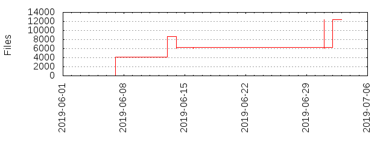

Files
- Total files
- 12417
- Total lines
- 3326675
- Average file size
- 20709.01 bytes

| Extension | Files (%) | Lines (%) | Lines/file |
|---|
| 265 (2.13%) | 40249 (1.21%) | 151 |
| 0 | 31 (0.25%) | 238 (0.01%) | 7 |
| 1 | 4 (0.03%) | 90 (0.00%) | 22 |
| 11 | 2 (0.02%) | 10 (0.00%) | 5 |
| 13 | 2 (0.02%) | 10 (0.00%) | 5 |
| 16 | 2 (0.02%) | 10 (0.00%) | 5 |
| 17 | 4 (0.03%) | 20 (0.00%) | 5 |
| 18 | 1 (0.01%) | 4 (0.00%) | 4 |
| 19 | 1 (0.01%) | 5 (0.00%) | 5 |
| 2 | 14 (0.11%) | 70 (0.00%) | 5 |
| 242 | 6 (0.05%) | 24 (0.00%) | 4 |
| 3 | 16 (0.13%) | 80 (0.00%) | 5 |
| 30 | 1 (0.01%) | 5 (0.00%) | 5 |
| 33 | 1 (0.01%) | 5 (0.00%) | 5 |
| 38 | 1 (0.01%) | 5 (0.00%) | 5 |
| 39 | 1 (0.01%) | 4 (0.00%) | 4 |
| 4 | 11 (0.09%) | 55 (0.00%) | 5 |
| 40 | 1 (0.01%) | 5 (0.00%) | 5 |
| 5 | 10 (0.08%) | 50 (0.00%) | 5 |
| 6 | 14 (0.11%) | 69 (0.00%) | 4 |
| 8 | 1 (0.01%) | 4 (0.00%) | 4 |
| BAK | 2 (0.02%) | 15570 (0.47%) | 7785 |
| Dockerfile | 3 (0.02%) | 51 (0.00%) | 17 |
| TXT | 2 (0.02%) | 3819 (0.11%) | 1909 |
| ai | 1 (0.01%) | 214 (0.01%) | 214 |
| asc | 1 (0.01%) | 11 (0.00%) | 11 |
| aspx | 1 (0.01%) | 8 (0.00%) | 8 |
| bat | 14 (0.11%) | 310 (0.01%) | 22 |
| broken | 3 (0.02%) | 4 (0.00%) | 1 |
| bz2 | 1 (0.01%) | 0 (0.00%) | 0 |
| c | 2 (0.02%) | 1500 (0.05%) | 750 |
| cnf | 1 (0.01%) | 6 (0.00%) | 6 |
| coffee | 21 (0.17%) | 2580 (0.08%) | 122 |
| conf | 14 (0.11%) | 1982 (0.06%) | 141 |
| container | 1 (0.01%) | 0 (0.00%) | 0 |
| crt | 1 (0.01%) | 40 (0.00%) | 40 |
| css | 353 (2.84%) | 132773 (3.99%) | 376 |
| csv | 2 (0.02%) | 2 (0.00%) | 1 |
| db | 3 (0.02%) | 915 (0.03%) | 305 |
| dbf | 8 (0.06%) | 804 (0.02%) | 100 |
| default | 1 (0.01%) | 5 (0.00%) | 5 |
| dist | 46 (0.37%) | 1567 (0.05%) | 34 |
| eot | 8 (0.06%) | 1249 (0.04%) | 156 |
| exe | 1 (0.01%) | 20 (0.00%) | 20 |
| fdf | 1 (0.01%) | 13 (0.00%) | 13 |
| file | 1 (0.01%) | 1 (0.00%) | 1 |
| fixed | 193 (1.55%) | 19579 (0.59%) | 101 |
| fla | 1 (0.01%) | 147 (0.00%) | 147 |
| gif | 129 (1.04%) | 2530 (0.08%) | 19 |
| gz | 1 (0.01%) | 1 (0.00%) | 1 |
| h | 2 (0.02%) | 95 (0.00%) | 47 |
| hhvm | 1 (0.01%) | 31 (0.00%) | 31 |
| htm | 1 (0.01%) | 639 (0.02%) | 639 |
| html | 366 (2.95%) | 136626 (4.11%) | 373 |
| icc | 1 (0.01%) | 51 (0.00%) | 51 |
| ico | 5 (0.04%) | 130 (0.00%) | 26 |
| in | 254 (2.05%) | 432 (0.01%) | 1 |
| inc | 316 (2.54%) | 23348 (0.70%) | 73 |
| ini | 10 (0.08%) | 1993 (0.06%) | 199 |
| jpg | 347 (2.79%) | 128415 (3.86%) | 370 |
| js | 2022 (16.28%) | 444278 (13.36%) | 219 |
| json | 115 (0.93%) | 6558 (0.20%) | 57 |
| less | 20 (0.16%) | 2665 (0.08%) | 133 |
| lock | 8 (0.06%) | 6226 (0.19%) | 778 |
| m4 | 2 (0.02%) | 71 (0.00%) | 35 |
| map | 10 (0.08%) | 48 (0.00%) | 4 |
| markdown | 4 (0.03%) | 232 (0.01%) | 58 |
| md | 192 (1.55%) | 21942 (0.66%) | 114 |
| mediawiki | 1 (0.01%) | 16 (0.00%) | 16 |
| mo | 188 (1.51%) | 20821 (0.63%) | 110 |
| name | 1 (0.01%) | 0 (0.00%) | 0 |
| neon | 1 (0.01%) | 13 (0.00%) | 13 |
| nocoverage | 1 (0.01%) | 41 (0.00%) | 41 |
| ods | 1 (0.01%) | 21 (0.00%) | 21 |
| otf | 1 (0.01%) | 1778 (0.05%) | 1778 |
| out | 253 (2.04%) | 1102 (0.03%) | 4 |
| p12 | 1 (0.01%) | 11 (0.00%) | 11 |
| pdf | 1 (0.01%) | 178 (0.01%) | 178 |
| pem | 2 (0.02%) | 3697 (0.11%) | 1848 |
| phar | 2 (0.02%) | 90328 (2.72%) | 45164 |
| php | 3607 (29.05%) | 650786 (19.56%) | 180 |
| phpt | 143 (1.15%) | 6203 (0.19%) | 43 |
| png | 1558 (12.55%) | 41497 (1.25%) | 26 |
| po | 171 (1.38%) | 1675982 (50.38%) | 9801 |
| pot | 2 (0.02%) | 16320 (0.49%) | 8160 |
| prefs | 2 (0.02%) | 4 (0.00%) | 2 |
| prj | 3 (0.02%) | 0 (0.00%) | 0 |
| psd | 8 (0.06%) | 53800 (1.62%) | 6725 |
| pubkey | 1 (0.01%) | 5 (0.00%) | 5 |
| py | 3 (0.02%) | 535 (0.02%) | 178 |
| qix | 1 (0.01%) | 2 (0.00%) | 2 |
| rb | 10 (0.08%) | 349 (0.01%) | 34 |
| rst | 145 (1.17%) | 19854 (0.60%) | 136 |
| scss | 19 (0.15%) | 2261 (0.07%) | 119 |
| sh | 25 (0.20%) | 1871 (0.06%) | 74 |
| shp | 9 (0.07%) | 5369 (0.16%) | 596 |
| shx | 9 (0.07%) | 742 (0.02%) | 82 |
| sql | 14 (0.11%) | 1193 (0.04%) | 85 |
| sqlite | 1 (0.01%) | 147726 (4.44%) | 147726 |
| styl | 2 (0.02%) | 345 (0.01%) | 172 |
| svg | 239 (1.92%) | 20918 (0.63%) | 87 |
| swf | 4 (0.03%) | 422 (0.01%) | 105 |
| template | 1 (0.01%) | 20 (0.00%) | 20 |
| test | 342 (2.75%) | 6874 (0.21%) | 20 |
| toml | 1 (0.01%) | 7 (0.00%) | 7 |
| ttf | 8 (0.06%) | 3573 (0.11%) | 446 |
| twig | 237 (1.91%) | 8907 (0.27%) | 37 |
| txt | 130 (1.05%) | 26268 (0.79%) | 202 |
| types | 1 (0.01%) | 97 (0.00%) | 97 |
| w32 | 2 (0.02%) | 21 (0.00%) | 10 |
| woff | 8 (0.06%) | 880 (0.03%) | 110 |
| woff2 | 3 (0.02%) | 348 (0.01%) | 116 |
| wsdl | 1 (0.01%) | 198 (0.01%) | 198 |
| xap | 1 (0.01%) | 194 (0.01%) | 194 |
| xml | 228 (1.84%) | 9563 (0.29%) | 41 |
| xsd | 2 (0.02%) | 372 (0.01%) | 186 |
| yaml | 1 (0.01%) | 8 (0.00%) | 8 |
| yml | 54 (0.43%) | 4193 (0.13%) | 77 |
| z | 84 (0.68%) | 42729 (1.28%) | 508 |
| zip | 3 (0.02%) | 809 (0.02%) | 269 |